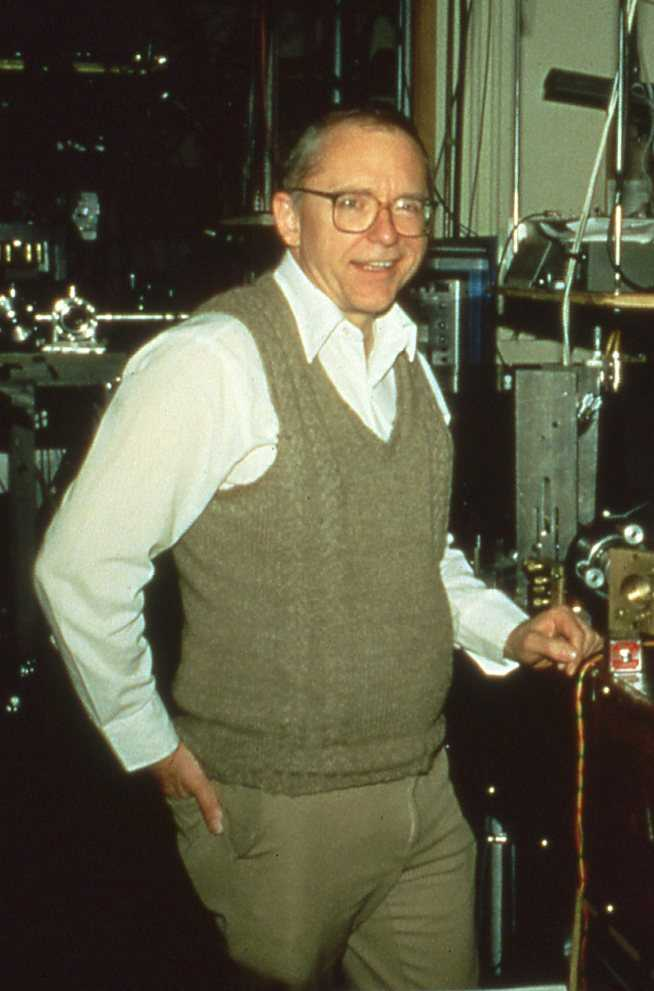

Laser-based Precision Spectroscopy
L
NIST Senior Fellow Emeritus
John L. (Jan) Hall
received the
2005 Nobel Prize
in Physics for “contributions to the development of
laser-based precision spectroscopy,
including the optical frequency comb technique." The optical frequency comb can be considered the biggest
revolution in precision measurements since the introduction of the laser in 1960. It is used in atomic clocks,
medical diagnostics, remote chemical analysis, communications and even potentially to detect the atmospheres
of planets outside our solar system.
Hall split half of the 2005 Nobel Prize with
Theodor Hansch
of the Max Planck Institute for
Quantum Optics
in Garching, Germany. The other half went to Harvard University physicist
Roy J. Glauber
for developing a theory of coherent light—the kind produced by the lasers to which Jan Hall dedicated his career.
Lasers have created an explosion of knowledge and discoveries in science through the technique of spectroscopy.
Spectroscopy is the study of the rainbow of light and other electromagnetic radiation given off by objects such as atoms and stars. Analyzing these rainbows, or spectra, enables scientists to understand the interplay of matter with electromagnetic radiation. Scientists also can use electromagnetic radiation to measure phenomena in a vast range of systems, from atoms to the largest objects in the universe. The use of lasers, which deliver light in a much more controlled way than other light sources, has made spectroscopy far more precise and powerful.
Hall's work for NIST began in 1961, just a year after scientists first demonstrated laser technology.
During the next four decades, Hall specialized in making lasers increasingly stable
(e.g. better able to produce light that maintains a constant color for longer and longer periods of time).
Such work greatly advanced the laser as a tool of science and commerce and helped scientists redefine the speed of light, and, as a result, the meter—one of the most basic units of measurement.
Source: https://www.nist.gov/nist-and-nobel/
John L.
"Jan" Hall
